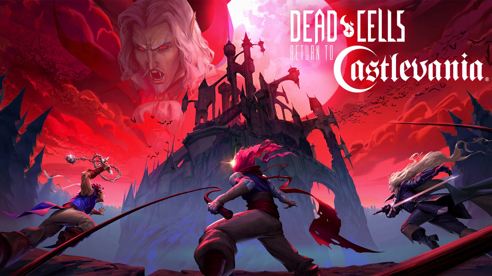

Introduction
Roguelike games are a subgenre of role-playing games characterized by procedural generation, permadeath, and turn-based movement. The genre traces its roots to the 1980 game Rogue, which was inspired by Dungeons & Dragons. Players explore randomly generated dungeons, fighting enemies and collecting loot.
Because of the permadeath mechanic, every decision carries weight, making each run unique and tense.
The term "roguelike" has evolved over the years, especially with the rise of indie games in the 2010s. Many games incorporate roguelike elements without being strictly turn-based or grid-based, leading to the rise of "roguelites." Despite debates over definitions, the influence of Rogue remains undeniable.
"The essence of a roguelike is unpredictability and permanent consequences." — Game Design Scholar
Roguelikes challenge players not just with difficulty but with the demand to adapt to the unknown. In a roguelike, no two playthroughs are ever the same, and players are forced to learn through trial, error, and often failure. Mastery comes through repetition and strategic experimentation.
1980: The Birth of Rogue
Michael Toy and Glenn Wichman create Rogue for UNIX systems, introducing the world to procedurally generated dungeons and permadeath.
1987-1995: The Classic Era
Games like NetHack, ADOM, and Angband expand on Rogue's foundations, creating deeper systems and more complex worlds.
2008-2011: The Roguelite Revolution
Spelunky and The Binding of Isaac introduce action elements and real-time gameplay, starting the roguelite movement.
2018-Present: The Golden Age
Modern masterpieces like Dead Cells, Risk of Rain 2, and Hades perfect the formula, bringing roguelikes to mainstream success.
Evolution of the Genre
The roguelike genre has undergone a fascinating evolution since its inception. What began as ASCII-based dungeon crawlers has expanded into a diverse ecosystem of games spanning multiple platforms and styles. The history page explores this evolution in depth, but here are some key developments:
The Berlin Interpretation of 2008 attempted to formalize what makes a "true roguelike" with factors like random environment generation, permadeath, turn-based gameplay, non-modal gameplay, and complexity. As developers pushed boundaries, the term "roguelite" emerged to describe games that borrowed some elements while discarding others.
Indie developers have been instrumental in revitalizing the genre. By focusing on accessibility and incorporating elements from other genres, they've helped roguelikes reach new audiences. Games like Dead Cells brilliantly balance the punishing nature of permadeath with a sense of progression through permanent upgrades, creating a more approachable experience while maintaining the tension that makes roguelikes special.
Modern roguelikes have also embraced storytelling in new ways. While classic roguelikes focused primarily on gameplay mechanics, games like Hades demonstrate that roguelikes can deliver compelling narratives where death is woven into the story itself. This innovation has helped attract players who might otherwise be turned off by the genre's notorious difficulty.

Modern Roguelike Classics
Today's roguelike landscape is dominated by several standout titles that have redefined the genre. Based on our recommendations page, here are some of the most influential modern roguelikes:
Dead Cells
★★★★★
A masterclass in roguelite design that blends precise Metroidvania-style combat with procedurally generated levels. Its brilliant progression system makes each failure feel like progress.
Read full review →
Risk of Rain 2
★★★★★
Successfully translated the 2D roguelike formula into a thrilling 3D experience with a unique risk-reward system where difficulty increases with time.
Read full review →
Hades
★★★★★
Redefined narrative in roguelikes by making each failed escape attempt advance the story. Features exceptional combat with four unique weapons and powers from Greek gods.
Read full review →
Balatro
★★★★☆
Proves roguelikes can thrive in unexpected genres with its poker-inspired deck building. Takes familiar concepts and transforms them into a strategic roguelike experience.
Read full review →
These titles represent different approaches to the roguelike formula. Dead Cells emphasizes tight combat controls and build variety, Risk of Rain 2 focuses on scaling difficulty and power fantasies, Hades prioritizes narrative integration, and Balatro demonstrates how roguelike principles can be applied to entirely different game genres.
What these games share is their commitment to the core roguelike values: unpredictability, replayability, and meaningful consequences. They've each found ways to make failure feel like part of the journey rather than a frustrating setback.
Roguelike Subgenres
As the roguelike genre has expanded, several distinct subgenres have emerged, each with its own approach to the core roguelike formula:
- Action Roguelikes: Games like Dead Cells and Enter the Gungeon that prioritize real-time combat skills over turn-based strategy.
- Deck-Building Roguelikes: Titles such as Slay the Spire and Balatro that combine card game mechanics with roguelike progression.
- Tactical Roguelikes: Games like Into the Breach that focus on strategic combat on small, chess-like boards.
- Narrative Roguelikes: Exemplified by Hades, these games emphasize story progression alongside gameplay challenges.
- Traditional Roguelikes: Games that adhere closely to the Berlin Interpretation, such as Caves of Qud and modern iterations of NetHack.
- Crossover Roguelikes: Games like BlazBlue Entropy Effect that blend roguelike mechanics with established genres like fighting games.
This diversity has helped the genre reach new audiences. Players who might be intimidated by traditional roguelikes can find entry points through subgenres that incorporate familiar mechanics from other types of games they enjoy.
"The best roguelikes don't just embrace randomness—they make it meaningful. Each run should tell a story, even if that story ends in failure." — Game Designer
Discussion
The original Rogue game was a text-based dungeon crawler developed for UNIX systems. Its minimalist design and procedural level generation were revolutionary. Over time, games like NetHack, ADOM, and Angband built upon Rogue's foundation, adding complexity and depth.
The modern era introduced roguelites like Dead Cells, Hades, and Slay the Spire, which softened the traditional permadeath system with persistent upgrades and story progression. These changes helped roguelike mechanics reach a broader audience.
Developers often turn to roguelike mechanics to extend replayability. Procedural generation makes each experience new, while permadeath heightens tension. These traits appeal to both hardcore and casual gamers looking for something fresh and challenging.
"You don't beat a roguelike. You understand it." — Indie Developer
The tension between roguelike purists and those who embrace a broader definition continues to shape the genre. As highlighted in our history page, the Berlin Interpretation attempted to establish formal criteria, but the evolution of the genre has outpaced these definitions. What matters most is not whether a game fits rigid definitions, but how it interprets and implements the core philosophy of roguelikes: learning through failure, adapting to randomness, and improving through knowledge rather than just in-game power-ups.
The rising popularity of roguelikes has influenced game design across the industry. Elements like procedural generation and run-based progression have appeared in mainstream titles across various genres, showing the lasting impact of the roguelike design philosophy.


Today, roguelike elements appear in almost every genre: shooters, platformers, card games, even farming sims. This fusion has helped popularize the genre and ensure its continued relevance in modern game design.
Critics sometimes argue that the genre has lost its identity due to these hybrids. Purists prefer the ASCII art and turn-based precision of classic roguelikes, while others welcome the diversity brought by modern interpretations. What's undeniable is that the core principles of roguelikes—procedural generation, permadeath, and meaningful choices—have proven to be timeless game design elements.